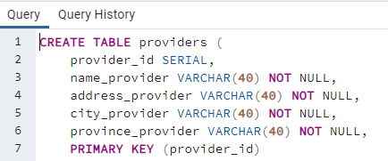

Un negocio quiere llevar el control de piezas que emplean en el día a día y los proveedores que suministran estas. De cada proveedor conocemos su nombre, dirección, ciudad, provincia y un código de proveedor que será único para cada uno de ellos. Nos interesa llevar un control de las piezas que nos suministra cada proveedor. Es importante conocer la cantidad de las diferentes piezas que nos suministra y en qué fecha lo hace. Tenga en cuenta que un mismo proveedor nos puede suministrar una pieza con el mismo código en diferentes fechas. El diseño de la base de datos debe permitir almacenar un histórico con todas las fechas y las cantidades que nos ha proporcionado un proveedor. Una misma pieza puede ser suministrada por diferentes proveedores. De cada pieza conocemos un código que será único, nombre, color, precio y categoría. Pueden existir varias categorías y para cada categoría hay un nombre y un código de categoría único. Una pieza solo puede pertenecer a una categoría.
Se desea diseñar una base de datos que sea de utilidad para concesionarios de automóviles. Un concesionario puede vender automóviles de varias marcas (por ejemplo, Audi y Volkswagen). Sobre los automóviles se desea mantener la siguiente información: marca, modelo, precio, descuento (si es que lo tiene) y los datos técnicos (potencia fiscal, cilindrada, etc.). Para cada modelo de automóvil se quiere conocer las características de su equipamiento de serie (por ejemplo: airbag conductor y cierre centralizado), así como los extras que se pueden incluir (aire acondicionado, airbag acompañante, pintura metalizada, etc.) y el precio de cada uno de ellos. Notar que, lo que son características del equipamiento de serie de algunos modelos, son extras para otros modelos. Por ejemplo, hay modelos que llevan el airbag de serie mientras que otros lo tienen como un posible extra. El concesionario tiene siempre automóviles de varios modelos en stock (cada uno se identifica por su número de bastidor). Éstos se pueden encontrar en su mismo local, o bien, en cualquiera de los servicios oficiales que dependen de él. Un servicio oficial es también una tienda de automóviles, pero depende de un concesionario que es el que le presta los automóviles para su exposición, y también se los vende. De cada servicio oficial se conoce el nombre, domicilio e INE. Cuando se vende un automóvil se quiere saber quién lo ha vendido: puede ser uno de los vendedores del concesionario o bien un servicio oficial. También se desea saber el precio que se ha cobrado por él y el modo de pago: al contado o mediante financiera. También se guardará información sobre los extras que se han incluido, precio de cada uno, la fecha de entrega, matrícula y si era de stock o se ha tenido que encargar a fábrica. De los vendedores se almacenarán los datos personales (nombre, INE, domicilio, etc.) y las ventas realizadas.